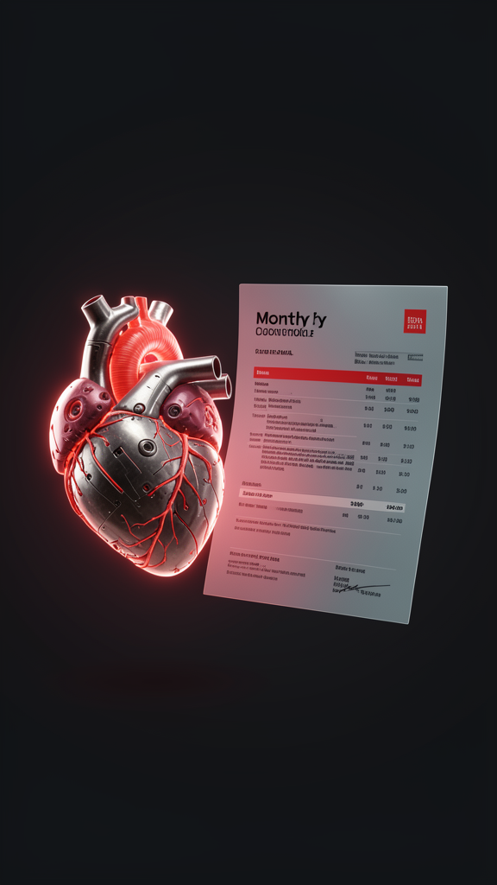

Parte #001 · Escenario semilla: PRISM #006
Si el corazón artificial se vuelve una suscripción, hay una pregunta que la medicina nunca tuvo que responder: ¿qué pasa si dejás de pagar?
Lectura 11 minEconomía de la longevidadSalud · Finanzas · Derecho
01 · La escena
El 3 de cada mes te llega la factura del corazón.
No de un tratamiento, no de una obra social: del corazón. El aparato que tenés en el pecho no es tuyo. Lo alquilás. La cuota cubre el dispositivo, el monitoreo permanente que corre en un servidor a mil kilómetros, las actualizaciones de firmware que bajan mientras dormís, y el reemplazo programado cuando el fabricante decida que este modelo llegó al final de su vida útil.
Sos licenciatario. El titular es la empresa.
Y entonces aparece la pregunta que ningún comité de bioética tuvo que contestar en toda la historia de la medicina, porque hasta ahora los órganos no tenían dueño: si dejás de pagar, ¿qué pasa?
La respuesta que se está construyendo no es médica ni tecnológica. Es jurídica, y llega tarde, como siempre. Alguien tiene que escribir, en una ley, que un acreedor no puede embargarte el corazón.
Ese es el escenario. Ahora la parte incómoda: cuánto de esto ya existe.

02 · El presente
Nada de lo anterior requiere un invento nuevo. Requiere que se junten cuatro cosas que ya funcionan por separado, y que alguien las facture juntas.
El BiVACOR TAH, un corazón artificial total sin válvulas con rotor magnéticamente levitado, tuvo su primera implantación en humano el 9 de julio de 2024 en el Baylor St. Luke's Medical Center / Texas Heart Institute, como puente a trasplante. No es un prototipo de papel: es un dispositivo de uso compasivo ya implantado en más de un paciente [fuente: bivacor.com] [Texas Heart Institute].
El CardioMEMS HF System (Abbott) es un sensor de presión de arteria pulmonar implantable que transmite de forma inalámbrica los cambios hemodinámicos antes de que se descompense la insuficiencia cardíaca. Está aprobado por la FDA y es, hoy, el único sensor de ese tipo en uso clínico rutinario [fuente: FDA] [Abbott].
La transferencia de energía mid-field a través de tejido —alimentar implantes profundos sin cable— fue demostrada por Ada Poon (Stanford) y publicada en 2014 [fuente: Ho et al., PMC4050616]. Es investigación, no producto; pero la física ya está resuelta.
La suscripción no hay que inventarla: es el modelo dominante del software, de los autos por leasing y de las turbinas de avión, que hace décadas se venden por hora de vuelo y no por unidad. Lo único nuevo es dónde se instala el activo alquilado.
Nota de método. Las tres afirmaciones técnicas de arriba están marcadas como pendientes en lugar de escritas. Es deliberado: el escenario PRISM que originó este Parte las da por ciertas, pero un escenario no es una fuente. Cada una se verifica contra origen primario antes de publicar, o no entra.
03 · La mecánica
La intuición dice que comprar es mejor que alquilar. Con un corazón artificial, la intuición se rompe, y entender por qué es entender todo el escenario.
Un dispositivo que se compra es un objeto terminado: el que lo vendió ya cobró y su incentivo es que no vuelva. Un dispositivo que se alquila es una relación: el proveedor cobra todos los meses mientras el paciente esté vivo y el aparato funcione. Por primera vez, el fabricante gana plata cuando vos no te enfermás.
Eso alinea tres cosas que hoy están desalineadas. El monitoreo deja de ser un costo y pasa a ser una inversión en no pagar una cirugía. La actualización remota deja de ser un riesgo regulatorio y pasa a ser mantenimiento. Y el reemplazo programado deja de ser una catástrofe familiar y pasa a ser un renglón previsto en el contrato.
Para no atribuirle a ninguna empresa existente un movimiento que no anunció, vamos a llamar Meridian al primer proveedor que lance este modelo. Meridian no existe. Las capacidades técnicas que describimos sí, y están en el bloque de fuentes; el acuerdo comercial que las junta, todavía no.
El modelo de Meridian cierra si tres números se sostienen: que el costo de mantener a un paciente sea menor que la cuota, que el paciente dure lo suficiente para amortizar el implante, y que alguien financie el capital inicial mientras tanto. Los dos primeros son medicina. El tercero es donde la cosa se pone rara.
Un paciente que paga una cuota fija durante quince años es, para un ingeniero financiero, exactamente lo mismo que una hipoteca: un flujo previsible que se puede empaquetar, tramar por riesgo y vender a un inversor. Los escenarios que proyectan este mundo le ponen nombre —títulos respaldados por corazones— y ahí conviene frenar y decir algo con todas las letras.
Empaquetar flujos de pago de gente que necesita el activo para seguir viva tiene un antecedente conocido, y no terminó bien. La diferencia con 2008 no es técnica: es que si el tenedor de un bono deja de cobrar, lo que se ejecuta no es una casa.
Ahí es donde baja nuestra confianza. Que la tecnología llegue es plausible; que el andamiaje financiero se construya sin una crisis en el medio es una apuesta que no haríamos.
04 · Los frenos
Un informe sin frenos no es análisis: es entusiasmo con tipografía. Estos son los cuatro que más pesan.
Un dispositivo actualizable a distancia es, por definición, un dispositivo atacable a distancia. Un ransomware en una bomba cardíaca no da margen de negociación: se paga en horas. El escenario semilla proyecta un incidente de este tipo y lo trata como el punto de inflexión regulatorio de toda la industria. Es el freno más probable, y el más caro.
Si el aparato es de ellos y el firmware es de ellos, cambiar de proveedor no es cambiar de compañía: es una cirugía. El lock-in deja de ser una molestia comercial y pasa a ser una condición física. Ninguna agencia de competencia del mundo tiene herramientas para eso hoy.
La inembargabilidad, el derecho a desconexión, quién decide apagarlo y con qué firma: nada de eso está resuelto en ningún ordenamiento. Y un modelo de negocio que necesita una ley que todavía no existe no es un plan: es una hipótesis con equipo de ventas.
Corroborado en este Parte: la auditoría no encontró ninguna ley 27.890 sobre inembargabilidad de órganos artificiales en el Boletín Oficial — el vacío es real, no retórico.
El corazón carga tres mil años de metáfora. Alquilarlo no es una decisión de consumo: es una decisión sobre qué somos. Un solo caso mediático desgraciado puede correr esto una década, y la historia de la biotecnología está llena de moratorias que empezaron con una tapa de diario.
05 · El tablero
Los escenarios no se anuncian: se filtran. Estos son los observables concretos. Si empiezan a encenderse en orden, el mundo se está moviendo hacia acá.
Que un proveedor de dispositivos cardíacos publique una tarifa mensual, todo incluido, en vez de un precio de venta. Es el disparador de todo lo demás.
Que una agencia sanitaria autorice OTA sobre un implante activo. Convierte al dispositivo en plataforma.
Que aparezca un vehículo financiero respaldado por flujos de suscripción médica. Si esto llega antes que la regulación, el orden de los factores va a importar.
Cualquier iniciativa que trate la propiedad, la herencia o la inembargabilidad de un implante. Ver la nota del Aparato: hay un número de ley circulando sin confirmar.
Que un tribunal admita una demanda sobre quién tiene la potestad de apagar un órgano artificial. Es el momento en que el derecho toma la posta.
Estos cinco observables se dan de alta hoy en el Lab de Vigilancia con etiqueta origen: parte_001. Si en el próximo Parte alguno cambió de estado, lo van a leer acá primero.
06 · Y entonces qué
Tu negocio deja de ser cubrir un evento y pasa a ser gestionar una suscripción de por vida. Eso no es un producto nuevo: es otro negocio. El que llega primero define quién es el reasegurador de quién.
Vas a tener que explicarle a un paciente que el aparato que lo mantiene vivo tiene términos y condiciones. Nadie te formó para esa conversación, y va a ser rutina antes de lo que parece.
Las cuatro preguntas —propiedad, embargabilidad, desconexión, portabilidad— no tienen respuesta en ningún código del mundo. El país que las conteste primero, con seriedad, se convierte en jurisdicción de referencia. Es una ventana chica y se cierra sola.
Vas a poder elegir entre morir en una lista de espera o alquilar. Es una mejora enorme sobre la única opción anterior. Y es, también, la primera vez que un ser humano va a leer la letra chica de su propio cuerpo.
07 · El aparato · Capa 2
No hace falta leer esto para entender el Parte. Está para que cualquier afirmación pueda rastrearse hasta su origen — o para que se vea con claridad dónde no hay origen.
| # | Claim | Clase | Veredicto |
|---|---|---|---|
| 1 | Existe un TAH con rotor levitado implantado en humano | E | VERIFICADO |
| 2 | Monitoreo hemodinámico implantable con predicción de descompensación | T | VERIFICADO |
| 3 | Transferencia de energía mid-field a través de tejido | T | VERIFICADO |
| 4 | «Ley 27.890 AR» otorga inembargabilidad al órgano artificial | N | ELIMINADO · NORMA FANTASMA |
| 5 | Suscripción como modelo dominante en software, leasing y aviación | E | VERIFICABLE |
| 6 | Meridian lanza el primer CaaS comercial | P | FICTICIO · declarado |
| 7 | Títulos respaldados por flujos de suscripción médica | P | PROYECCIÓN del escenario |
| 8 | Cuota mensual, TAM, ARR 2035, número de suscriptores | D | Sin información |
Claims 1–3: el escenario semilla los da por ciertos. Un escenario no es una fuente. Se verifican contra origen primario o el bloque no se publica.
Claim 4 — eliminado (norma fantasma). Era el único claim clase N del Parte. Un número de ley argentina (27.890), con formato correcto, otorgando inembargabilidad a órganos artificiales, sin link. Auditoría contra Boletín Oficial e InfoLEG: la Ley 27.890 no existe. El BO sólo registra Ley 27.447 (trasplantes, 2023) y Ley 24.193. Es el patrón «norma fantasma» del Protocolo Anti-Alucinación, mismo perfil que ANMAT 4359/2025. Corolario del §4.11: el mismo número 27.890 aparece como «Ley 27.890 (2028) — Responsabilidad Penal Algorítmica» en PRISM #002 y como «Art. 12 Ley 27.890 AR» en PRISM #005. Se auditaron los ocho PRISM: la única norma fantasma recurrente es la familia 27.890; el resto (Ley 25.326, 27.442, 27.447, GDPR, UE Data Act, DPDP, LGPD) es real. El claim 4 se eliminó: no se publica.
Claim 8. Las cifras económicas del escenario (cuota mensual, tamaño de mercado, cantidad de suscriptores a 2035) son proyecciones internas sin fuente primaria. No se citan como dato. Por eso este Parte no tiene un solo número de mercado en la Capa 1.
Formato de cita: autor/editor · título · medio · fecha · URL · fecha de consulta · tier. Corroboración contada por origen independiente: cinco medios que reescriben un mismo comunicado son una fuente, no cinco.
Semilla: PRISM #006 — «Economía de la Longevidad: suscripción a órganos artificiales y el fin del seguro tradicional». Horizonte 2027–2035. Este Parte desarrolla un ángulo del escenario: la propiedad del órgano. El escenario contiene otros —el modelo por bloques geopolíticos, la titulización, la ciberseguridad de implantes— que alimentarán Partes futuros.
Criterio de defunción del ángulo: si al 31/12/2029 ningún proveedor de dispositivos cardíacos publica una tarifa de suscripción todo-incluido, el ángulo se declara muerto y se reescribe. Un escenario que no se puede matar no es una hipótesis: es una creencia.
Semilla PRISM → selección de ángulo (Chairman) → borrador narrativo (Agente Editorial) → extracción de claims a lista plana (Agente Extractor) → verificación SAT por verificador de contexto limpio, que no ve el borrador y solo recibe los claims desnudos → ronda de adversario sobre los verificados → firma del Chairman → maquetado → alta de señales nuevas en el Lab.
El redactor no se verifica a sí mismo, del mismo modo que el verificador no escribe. Un modelo que produjo una afirmación tiende a confirmarla cuando se le pregunta por ella: la separación de funciones no es burocracia, es la única defensa que funciona.
Estado de este ejemplar: publicado con verificación aplicada. Claims 1–3 verificados contra fuente primaria (T1). Claim 4 eliminado por ser norma fantasma (27.890 inexistente). No es un Parte del ciclo completo Editorial→Extractor→Verificador→Adversario→Chairman; se publica como pieza ilustrativa de la estructura y del protocolo anti-alucinación en acción.